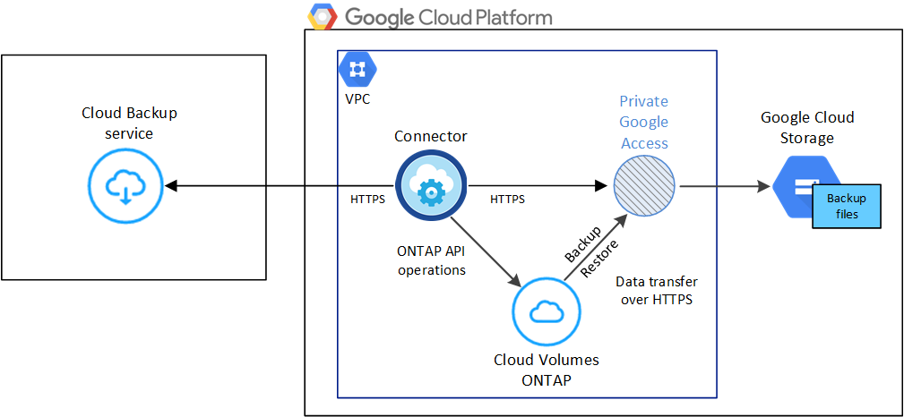
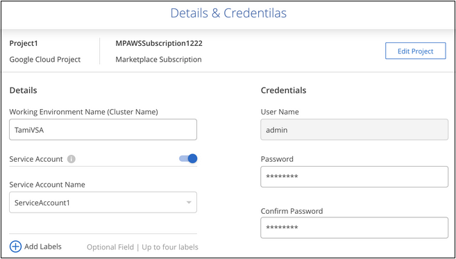

请求文档变更
请求文档变更 在 GitHub 上编辑
在 GitHub 上编辑 提供者指南
提供者指南将 Cloud Volumes ONTAP 数据备份到 Google 云存储
完成几个步骤，开始将数据从 Cloud Volumes ONTAP 备份到 Google 云存储。
快速入门
按照以下步骤快速入门，或者向下滚动到其余部分以了解完整详细信息。
{kind=link}
-
您正在 GCP 中运行 Cloud Volumes ONTAP 9.7P5 或更高版本。
-
您已为备份所在的存储空间订阅了有效的 GCP 。
-
您的 Google Cloud Project 中有一个服务帐户，该帐户具有预定义的存储管理员角色。
-
您已订阅 "Cloud Manager Marketplace Backup 产品"或您已购买 "并激活" NetApp 提供的 Cloud Backup BYOL 许可证。
{kind=link}
-
新系统：完成新的工作环境向导后，可以启用 Cloud Backup 。
-
现有系统：选择工作环境，然后单击右侧面板中备份和还原服务旁边的 * 启用 * ，然后按照设置向导进行操作。

选择要在其中创建用于备份的 Google Cloud Storage 存储分段的 Google Cloud Project 。
默认策略每天备份卷，并保留每个卷的最新 30 个备份副本。更改为每小时，每天，每周或每月备份，或者选择一个提供更多选项的系统定义策略。您还可以更改要保留的备份副本数。

在选择卷页面中，使用默认备份策略确定要备份的卷。如果要为某些卷分配不同的备份策略，可以创建其他策略并稍后将其应用于卷。
要求
在开始将卷备份到 Google Cloud 存储之前，请阅读以下要求，以确保您的配置受支持。
下图显示了每个组件以及需要在它们之间准备的连接：

- 支持的 ONTAP 版本
-
Cloud Volumes ONTAP 9.7P5 及更高版本。
- 支持的 GCP 区域
-
所有 GCP 地区均支持 Cloud Backup "支持 Cloud Volumes ONTAP 的位置"。
- 许可证要求
-
对于 Cloud Backup PAYGO 许可，可通过订阅 "GCP 市场" 在启用 Cloud Backup 之前为必填项。Cloud Backup 的计费通过此订阅完成。 "您可以从工作环境向导的详细信息和 amp ；凭据页面订阅"。
对于 Cloud Backup BYOL 许可，您需要 NetApp 提供的序列号，以便在许可证有效期和容量内使用此服务。 "了解如何管理 BYOL 许可证"。
您需要为备份所在的存储空间订阅 Google 。
- GCP 服务帐户
-
您需要在 Google Cloud Project 中拥有一个具有预定义的存储管理员角色的服务帐户。 "了解如何创建服务帐户"。
- 验证并向Connector添加权限
-
要使用Cloud Backup搜索和还原功能、您需要对Connector的角色拥有特定权限、以便它可以访问Google Cloud BigQuery服务。请参见以下权限、如果需要修改策略、请按照以下步骤进行操作。
-
在中 "云控制台"下，转到 * 角色 * 页面。
-
使用页面顶部的下拉列表，选择包含要编辑的角色的项目或组织。
-
单击一个自定义角色。
-
单击 * 编辑角色 * 以更新角色的权限。
-
单击 * 添加权限 * 向角色添加以下新权限。
bigquery.jobs.get bigquery.jobs.list bigquery.jobs.listAll bigquery.datasets.create bigquery.datasets.get bigquery.jobs.create bigquery.tables.get bigquery.tables.getData bigquery.tables.list bigquery.tables.create -
单击 * 更新 * 以保存已编辑的角色。
在新系统上启用 Cloud Backup
完成工作环境向导以创建新的 Cloud Volumes ONTAP 系统时，可以启用云备份。
您必须已配置服务帐户。如果在创建 Cloud Volumes ONTAP 系统时未选择服务帐户，则需要关闭系统并从 GCP 控制台将服务帐户添加到 Cloud Volumes ONTAP 。
请参见 "在 GCP 中启动 Cloud Volumes ONTAP" 有关创建 Cloud Volumes ONTAP 系统的要求和详细信息，请参见。
-
在工作环境页面上，单击 * 添加工作环境 * 并按照提示进行操作。
-
* 选择位置 * ：选择 * Google Cloud Platform* 。
-
* 选择类型 * ：选择 * Cloud Volumes ONTAP * （单节点或高可用性）。
-
* 详细信息和凭据 * ：输入以下信息：
-
单击 * 编辑项目 * ，如果要使用的项目与默认项目（ Cloud Manager 所在的项目）不同，请选择一个新项目。
-
指定集群名称。
-
启用 * 服务帐户 * 开关，然后选择具有预定义的存储管理员角色的服务帐户。要启用备份和分层，必须执行此操作。
-
指定凭据。
确保已订阅 GCP Marketplace 。

-
-
* 服务 * ：保持 Cloud Backup Service 处于启用状态，然后单击 * 继续 * 。

-
完成向导中的页面以部署系统，如中所述 "在 GCP 中启动 Cloud Volumes ONTAP"。
Cloud Backup 在系统上启用，并备份您每天创建的卷，并保留最近 30 个备份副本。
您可以 "启动和停止卷备份或更改备份计划"。您也可以 "从备份文件还原整个卷" 连接到 Google 中的 Cloud Volumes ONTAP 系统或内部 ONTAP 系统。
在现有系统上启用 Cloud Backup
您可以随时直接从工作环境启用 Cloud Backup 。
-
选择工作环境，然后单击右面板中备份和还原服务旁边的 * 启用 * 。
-
选择要为备份创建 Google Cloud Storage 存储分段的 Google Cloud Project 和区域，然后单击 * 下一步 * 。
请注意，项目必须具有具有预定义的存储管理员角色的服务帐户。
-
在 Define Policy 页面中，选择默认备份计划和保留值，然后单击 * 下一步 * 。
请参见 "现有策略的列表"。
-
在选择卷页面中，使用默认备份策略选择要备份的卷。如果要为某些卷分配不同的备份策略，可以创建其他策略并稍后将其应用于这些卷。

-
要备份所有卷，请选中标题行（
 ）。
）。 -
要备份单个卷，请选中每个卷对应的框（
 ）。
）。
-
-
如果希望将来添加的所有卷都启用备份，只需选中 " 自动备份未来卷 …" 复选框即可。如果禁用此设置，则需要手动为未来的卷启用备份。
-
单击 * 激活备份 * ， Cloud Backup 将开始对每个选定卷进行初始备份。
Cloud Backup 将开始对每个选定卷进行初始备份，此时将显示卷备份信息板，以便您可以监控备份的状态。
您可以 "启动和停止卷备份或更改备份计划"。您也可以 "从备份文件还原卷或文件" 连接到 Google 中的 Cloud Volumes ONTAP 系统或内部 ONTAP 系统。